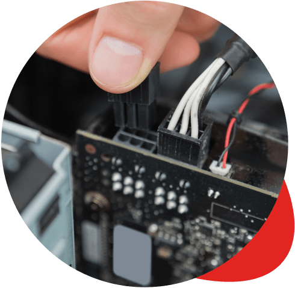

Servicio técnico particulares
Reparación de ordenadores, móviles, tablets e impresoras. Eliminacion de virus, instalación de sistemas operativos y consumibles.
Ver serviciosAsesoramiento informático, reparación de equipos, ciberseguridad, redes y venta de productos tecnológicos. Mas de dos decadas al servicio de particulares y empresas en Calahorra y La Rioja.

UP Digital es una empresa de servicios informáticos con sede en Calahorra (La Rioja), con mas de 20 años de experiencia en el sector. Ofrecemos asesoramiento informático integral y servicio técnico tanto para particulares cómo para empresas.
Además, contamos con un amplio catálogo de productos informáticos y electrónica de consumo: redes cableadas y wifi, armarios rack, cartuchos y toner de impresora, telefonía y soluciones de impresión.
Cubrimos todas las necesidades informáticas de particulares y empresas, desde la reparación de un móvil hasta la gestión completa de la infraestructura tecnológica de tu negocio.
Reparación de ordenadores, móviles, tablets e impresoras. Eliminacion de virus, instalación de sistemas operativos y consumibles.
Ver serviciosMantenimiento de equipos, configuración de redes, ciberseguridad, copias de seguridad, software de gestión y renting de servidores.
Ver serviciosDiseño y desarrollo de páginas web profesionales adaptadas a las necesidades de tu negocio, con mantenimiento incluido.
Ver masRegistro de dominios, alojamiento web, cuentas de correo profesional y certificados de seguridad SSL.
Ver masVirtualización de servidores para optimizar recursos, reducir costes y mejorar la disponibilidad de los sistemas de tu empresa.
Ver masSoluciones de seguridad informática para proteger tus equipos y datos frente a virus, malware y amenazas en línea.
Ver masUn proceso claro y transparente para resolver cualquier necesidad informática, ya seas particular o empresa.
Analizamos tu equipo o tu infraestructura para identificar el problema o la necesidad con precisión.
Te informamos del coste y el plazo antes de actuar. Sin sorpresas, con total transparencia.
Ejecutamos la reparación, instalación o configuración con la máxima eficacia y te entregamos el equipo listo.
Mantenimiento y reparación de ordenadores, portátiles, móviles, tablets, impresoras y dispositivos multimedia. Solucionamos averías, mejoramos el rendimiento y eliminamos virus. También reemplazamos componentes dañados cómo pantallas rotas, conectores de carga defectuosos y baterías agotadas.
Ofrecemos servicio técnico completo para particulares y empresas: reparación de ordenadores, móviles, tablets e impresoras, eliminación de virus, instalación de sistemas operativos, mantenimiento de equipos, configuración de redes, ciberseguridad, copias de seguridad, desarrollo web, dominios y hosting, y venta de productos informáticos.
Si. Reparamos móviles y tablets de todas las marcas: pantallas rotas, conectores de carga, baterías agotadas, problemas de software y cualquier otra avería.
Si. Contamos con un servicio integral para empresas que incluye mantenimiento de equipos, configuración y mantenimiento de redes, ciberseguridad, copias de seguridad y rescate de datos, software de gestión y contabilidad, armarios rack, y renting de servidores e impresoras.
Abrimos de lunes a viernes de 9:30 a 13:30 y de 16:30 a 20:00.
Si, disponemos de una tienda online en tienda.upical.es con un amplio catálogo de productos informáticos, electrónica de consumo, periféricos, consumibles, telefonía y mucho mas.
Estamos en la Avenida Valvanera 24 Bajo, 26500 Calahorra, La Rioja. Puedes visitarnos en horario comercial o contactar por teléfono y WhatsApp.
Visítanos en nuestra tienda en la Avenida Valvanera de Calahorra o contáctanos por teléfono, WhatsApp o email.